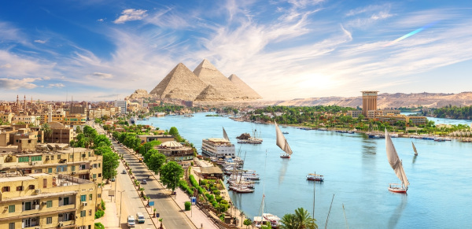
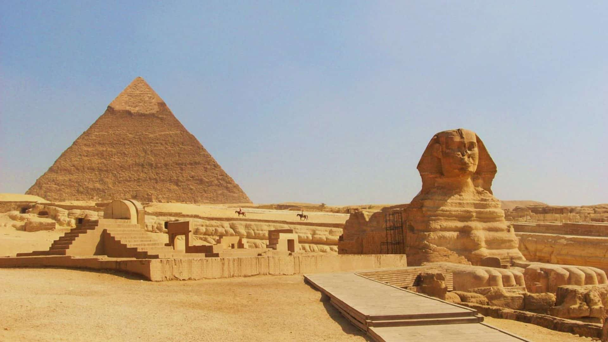
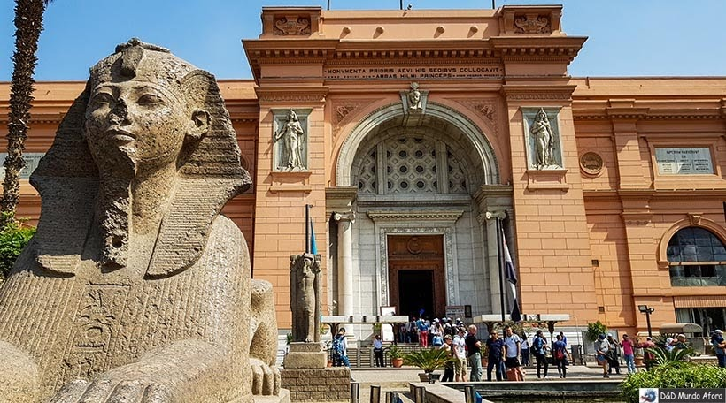
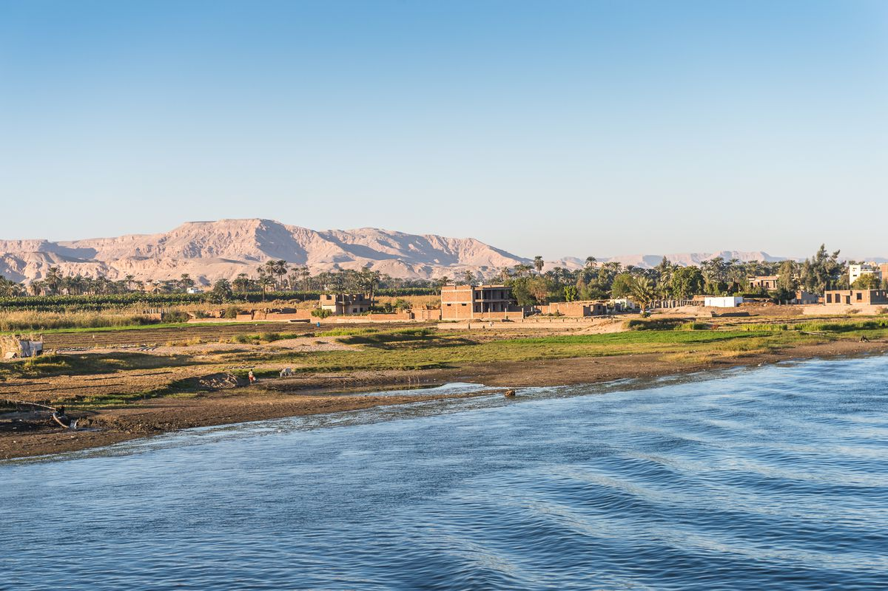

Conheça o Egito:
O Egito é uma terra milenar, berço de uma das civilizações mais fascinantes da história, onde o passado e o presente se encontram às margens do majestoso rio Nilo.
No Egito, os visitantes encontram uma incrível diversidade de pontos turísticos que revelam a grandiosidade de sua história e cultura milenar. Cada região apresenta uma experiência única, unindo passado e presente em uma viagem inesquecível e rica em história.
Grande Pirâmide de Gizé e a Grande Esfinge:
As Pirâmides de Gizé são o símbolo mais icônico do Egito e uma das Sete Maravilhas do Mundo Antigo ainda existentes. Construídas há mais de 4.500 anos, as pirâmides de Quéops, Quéfren e Miquerinos continuam impressionando pela grandiosidade e mistério que as cercam. Ao lado delas, a Grande Esfinge de Gizé, com corpo de leão e rosto humano, guarda silenciosamente o planalto, despertando fascínio e curiosidade em visitantes de todo o mundo.
Museu Egípcio:
A capital, Cairo, é uma metrópole vibrante onde o passado e o presente convivem lado a lado. No coração da cidade, o Museu Egípcio do Cairo abriga uma das maiores coleções de artefatos do Egito Antigo, incluindo o tesouro de Tutancâmon, múmias, joias e estátuas de valor inestimável.
Rio Nilo
O rio Nilo é a alma do Egito. Um passeio de barco ou cruzeiro pelo Nilo é uma das experiências mais inesquecíveis que o país pode oferecer. Durante a viagem, é possível admirar templos antigos, aldeias tradicionais e paisagens que contam a história da vida egípcia ao longo dos séculos. O pôr do sol às margens do Nilo é considerado um dos mais belos do mundo.